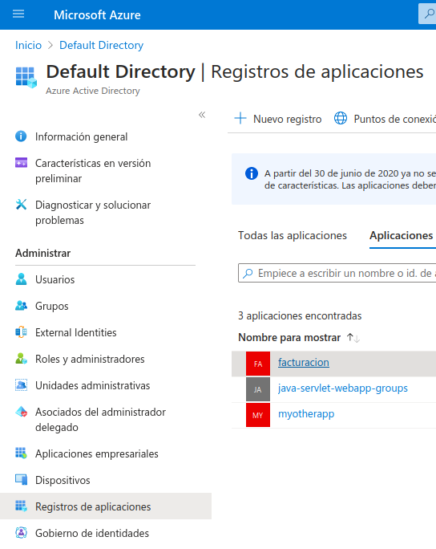

In the Register an application page that appears,
enter your application's registration information:

- In the Name section, enter facturacion.
- Under Supported account types, select Accounts in this organizational directory only. ()
- In the Redirect URI section, select Web
in the combo-box and enter the following redirect URI:
http://localhost:8080/facturacion/sso/azure/redirect
- Select Register to create the application.
En la página de administración de Azure AD, escoge la opción Registros de aplicaciones en el menú de la izquierda. Esto te mostrará la lista de tus aplicaciones, pulsa en facturacion.
- In the app's registration screen, click on the Certificates & secrets blade in the left to open the page where we can generate secrets and upload certificates.
- In the Client secrets section, click on New client secret:
-
- Type a key description (for instance secreto aplicación),
- Select one of the available key durations (In 1 year, In 2 years, or Never Expires) as per your security concerns.
-
- The generated key value will be displayed when you click the Add button. Copy the generated value for use in the steps later.
- You'll need this key later in your code's configuration files. This key value will not be displayed again, and is not retrievable by any other means, so make sure to note it from the Azure portal before navigating to any other screen or blade.
-
- In the app's registration screen, select the API
permissions blade in the left to open the page where we
add access to the APIs that your application needs.
- Select the Add a permission button and then:
- Ensure that the Microsoft APIs tab is
selected.
- In the Commonly used Microsoft APIs section, select Microsoft Graph
- In the Delegated permissions section, select User.Read and GroupMember.Read.All in the list. Use the search box if necessary.
- Select the Add permissions button at the bottom.
- GroupMember.Read.All requires admin consent. Select the Grant/revoke admin consent for {tenant} button, and then select Yes when you are asked if you want to grant consent for the requested permissions for all accounts in the tenant. You need to be an Azure AD tenant admin to do this.